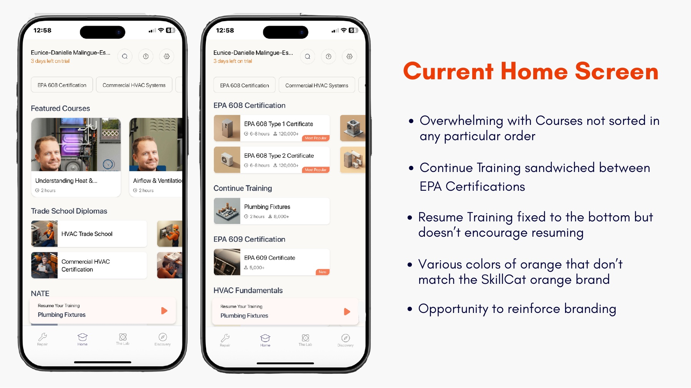
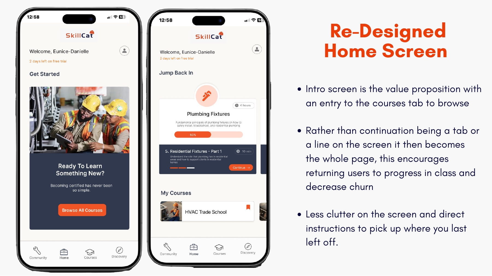
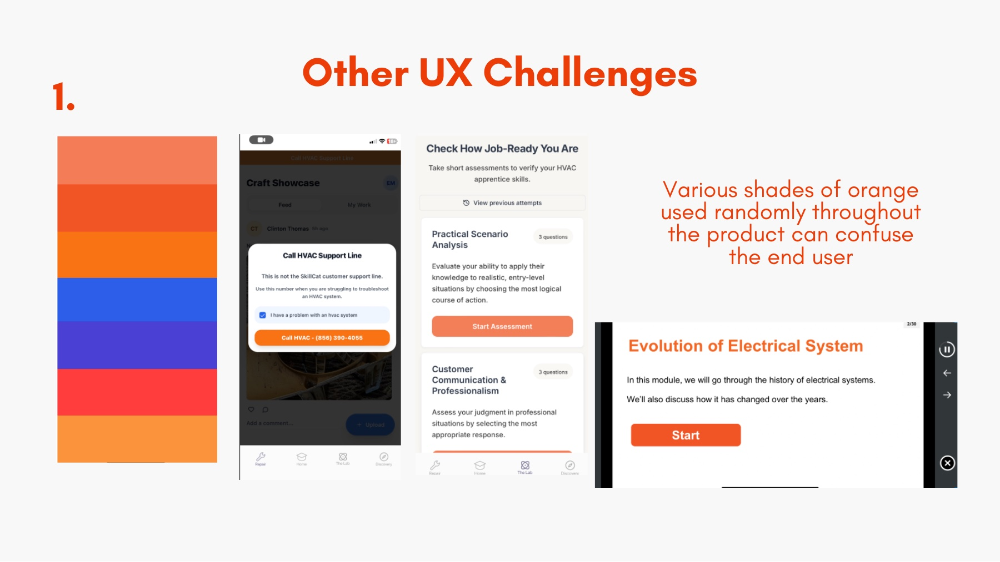

Product Design · UX Redesign
A self-initiated product design task: a teardown and redesign of the home screen for SkillCat, a mobile app that teaches valuable trade skills, focused on reducing clutter and keeping learners coming back.
SkillCat introduces people to valuable trade skills, but the real challenge is the journey after that first session. I took the existing app, audited where the experience created friction, and redesigned the home screen around one question: how do we accompany users along the journey instead of overwhelming them at the door?

Courses appear in no particular order, and Continue Training is sandwiched between EPA certifications.
Resume Training is pinned to the bottom and does nothing to actually encourage you to pick back up.
Several random shades of orange clash with the real SkillCat brand and confuse the eye.
Tabs like Lab, Discovery, and Repair overlap and are hard to understand at a glance.

Instead of being one line or a buried tab, picking up where you left off becomes the center of the screen. For returning users that is the single most important action, so it earns the most space, and that is the lever that lowers churn.
A clear value proposition welcomes new users with one obvious way into the course catalog, while everything else is stripped back. The result is calmer, more on-brand, and tells you exactly what to do next.
Beyond the home screen, I documented the issues holding the wider product back, with clear recommendations for each.

Random shades of orange used throughout the product confuse users and dilute the brand. I proposed a single, consistent SkillCat orange.
The Repair tab is really a community showcase, and it loads a training page before the social feed. I recommended renaming and reordering for clarity.
Lab and Discovery overlap and the Lab goes stale once its three quizzes are done. I proposed consolidating them into one clearly labeled tab.
SkillCat shows how I approach an existing product: study how real people move through it, find where the experience leaks attention, and redesign around the one behavior that matters most. It is the kind of focused, evidence-led UX work I love, taking something live and making it noticeably easier to use.